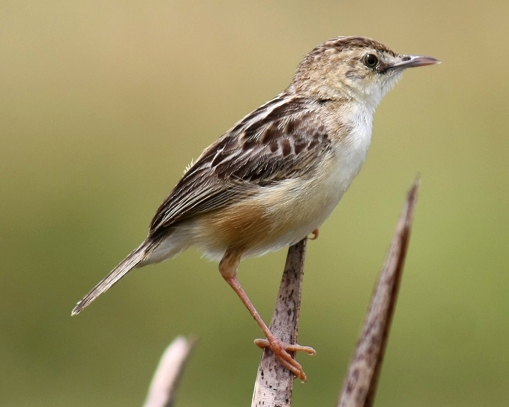

Cisticola juncidis
The Zitting Cisticola is a common Old World warbler whose breeding range includes southern Europe, Africa (outside the deserts and rainforest), and southern Asia down to northern Australia. It is 10 to 12 cm (3.9 to 4.7 in). It is brown above, heavily streaked with black markings. It has white underparts and a broad tail, with white tips that is flicked frequently which the name suggests. They feed on insects taken from the ground around the tall grass but also eat seeds from the same plants.